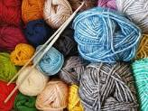

Welcome to the world of crocheting, where creativity knows no bounds. If you're new to crochet and eager to embark on your crocheting journey, granny square patterns are an excellent place to start. With a few fundamental crochet techniques, you can create beautiful granny square designs. A granny square typically begins with a center ring made of chains. From there, you'll work rounds of stitches, typically double crochets, and chain spaces to create the square's iconic design. As a beginner, start with a simple granny square pattern, and gradually experiment with color changes and more intricate designs as you gain confidence.
Crocheting is a delightful and rewarding craft that allows you to transform yarn into charming creations. For beginners, the granny square is a classic and approachable project. To begin your crocheting adventure, you'll need:
Before diving into granny square patterns, it's crucial to grasp a few basic crochet techniques:
Additionally, you'll need to know how to create a magic circle, also known as a magic ring, to start many crochet projects.
Once you have these essentials, you're ready to learn some crochet techniques that will set you on the path to creating stunning granny square patterns.
With these fundamental crochet techniques in your toolkit, you're ready to start your first granny square.
Crocheting granny square patterns can be both relaxing and creatively fulfilling. It's an ideal way for beginners to develop their crochet skills while producing beautiful, functional pieces.